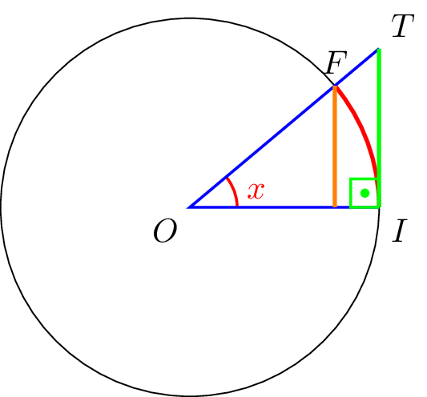
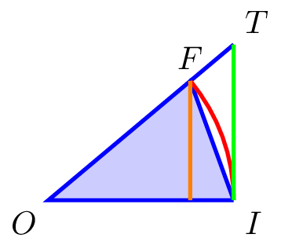
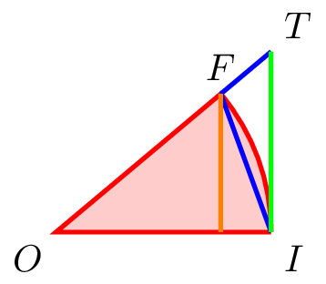
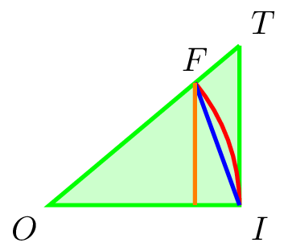

Os três “limites fundamentais” são
-
\(\displaystyle\lim_{x\to 0}\frac{\sin x}{x}=1\);
-
\(\displaystyle\lim_{x\to \pm\infty}\left(1+\frac{a}{x}\right)^x=e^a\);
-
\(\displaystyle\lim_{x\to 0}\frac{a^x-1}{x}=\ln(a)\).
Vamos verificar de fato que estes limites são válidos.
-
Para o primeiro, devemos utilizar o Teorema do Confronto. Vamos tentar aproximar o valor de \(\frac{\sin x}{x}\) utilizando funções trigonométricas.
Para isso, devemos relembrar como ângulos em radianos são medidos, o que pode ser feito utilizando o círculo trigonométrico: Primeiro, consideramos um círculo de raio \(1\) e um ângulo \(x\) traçado sobre seu centro, conforme a figura abaixo:

Nesta figura, temos que
-
O comprimento do segmento \(\overline{OI}\) é igual a \(1\).
-
A medida em radianos do ângulo \(x\) coincide com o comprimento do arco em vermelho (entre os pontos \(I\) e \(F\)).
-
O seno do ângulo \(x\) é o comprimento do segmento em laranja.
-
A tangente do ângulo \(x\) é o comprimento do segmento em verde.
Podemos agora verificar que \(\sin(x)\leq x\leq \tan(x)\), analizando áreas de partes da figura acima:
-
O triângulo \(\triangle IOF\) possui área dada pela metade do produto de sua base e sua altura, ou seja,
\begin{equation*}
\operatorname{area}(\triangle IOF)=\frac{\sin x}{2}.
\end{equation*}

-
A área total do círculo é igual a \(2\pi\), e o setor \(\angle IOF\) compreende uma fração de \(\frac{x}{2\pi}\) de “uma volta inteira” pelo círculo. Portanto, este setor possui área
\begin{equation*}
\operatorname{area}(\triangle IOF)=\frac{x}{2\pi}\cdot {\pi}=\frac{x}{2}.
\end{equation*}

-
O triâgulo \(\triangle IOT\) possui área dada pela metade do produto de sua base e sua altura, ou seja,
\begin{equation*}
\operatorname{area}(\triangle IOT)=\frac{\tan(x)}{2}.
\end{equation*}

Como \(\triangle IOF\subseteq\angle IOF\subseteq\triangle IOT\) e a área de figuras menores é menor do que a área de figuras maiores, obtemos
\begin{equation*}
\frac{\sin(x)}{2}\leq\frac{x}{2}\leq\frac{\tan(x)}{2},
\end{equation*}
ou seja,
\begin{equation*}
\sin(x)\leq x\leq\tan(x).
\end{equation*}
Daí, obtemos que
\begin{equation*}
\frac{\sin(x)}{\tan(x)}\leq \frac{sin(x)}{x}\leq \frac{x}{x},
\end{equation*}
ou seja,
\begin{equation*}
\cos(x)\leq \frac{\sin(x)}{x}\leq 1.
\end{equation*}
Tomando \(x\to 0\), temos que \(\cos(x)\to 1\), e pelo Teorema do Confronto obtemos que \(\frac{\sin(x)}{x}\to 1\). Isto mostra que
\begin{equation*}
\lim_{x\to 0}\frac{\sin(x)}{x}=1.
\end{equation*}
Nós já sabemos que
\begin{equation*}
e=\lim_{y\to\infty}\left(1+\frac{1}{y}\right)^y
\end{equation*}
(na verdade, esta é uma das definições que usamos). Vamos mostrar que o mesmo limite, porém no \(-\infty\), também é válido.
Por um lado, temos que
\begin{align*}
e
&=\lim_{y\to\infty}\left(1+\frac{1}{y}\right)^y\\
&=\lim_{y\to\infty}\left(\frac{y+1}{y}\right)^y,\tag{E2.1}
\end{align*}
e por outro, que
\begin{align*}
e
&=\lim_{y\to\infty}\left(1+\frac{1}{y}\right)^y\\
&=\lim_{z\to-\infty}\left(1-\frac{1}{z}\right)^{-z}\\
&=\lim_{z\to-\infty}\left(\frac{z-1}{z}\right)^{-z}\\
&=\lim_{z\to-\infty}\left(\frac{z}{z-1}\right)^z\tag{E2.2},
\end{align*}
onde realizamos a substituição \(z=-y\) na segunda igualdade. As expressões que aparecem em (E2.1) e em (E2.2) não são tão diferentes: são o quociente de dois monômios de grau \(1\) elevado à variável dos monômios. Vamos tentar transformar uma destas expressões na outra. Para isso, vamos procurar uma nova variável \(w\) de forma que
\begin{equation*}
\frac{w+1}{w}=\frac{z}{z-1}.
\end{equation*}
A resolução desta equação nos dá \(w=z+1\). Note que \(w\to-\infty\) se, e somente se, \(z\to-\infty\). Substituindo em (E2.2), obtemos
\begin{align*}
e
&=\lim_{w\to-\infty}\left(\frac{w+1}{w}\right)^{w+1}\\
&=\lim_{w\to-\infty}\left(\frac{w+1}{w}\right)^w\cdot \left(\frac{w+1}{w}\right).\tag{E2.3}
\end{align*}
Estamos quase terminados, exceto que temos um fato “\(\frac{w+1}{w}\)” sobrando. Vamos aplicar a regra do produto para limites. Note que
\begin{align*}
\lim_{w\to-\infty}\left(\frac{w+1}{w}\right)
&=\lim_{w\to-\infty}1+\frac{1}{w}\\
&=1
\end{align*}
e aplicando inversos, obtemos
\begin{align*}
1
&=1^{-1}\\
&=\lim_{w\to-\infty}\left(\frac{w+1}{w}\right)^{-1}\tag{E2.4}.
\end{align*}
Assim, concluímos que
\begin{align*}
e
&=e\cdot 1\\
&=\left(\lim_{w\to-\infty}\left(\frac{w+1}{w}\right)^w\cdot\left(\frac{w+1}{w}\right)\right)\cdot\left(\lim_{w\to-\infty}\left(\frac{w+1}{w}\right)^{-1}\right)\\
&\qquad\text{(por (E2.3) e (E2.4)}\\
&=\lim_{w\to-\infty}\left(\frac{w+1}{w}\right)^w\cdot\left(\frac{w+1}{w}\right)\cdot\left(\frac{w+1}{w}\right)^{-1}\\
&\qquad\text{(pela Regra do Produto)}\\
&=\lim_{w\to-\infty}\left(\frac{w+1}{w}\right)^w.\tag{E2.5}
\end{align*}
Juntando (E2.1) e (E2.5), concluímos que
\begin{equation*}
e=\lim_{y\to\pm\infty}\left(1+\frac{1}{y}\right)^{y}.
\end{equation*}
Agora no caso geral, considere \(a\in\mathbb{R}\). Se \(a=0\), então claramente temos que
\begin{align*}
\lim_{x\to\pm\infty}\left(1+\frac{0}{x}\right)^x
&=\lim_{x\to\pm\infty}1^x\\
&=1\\
&=e^0.
\end{align*}
Suponha então que \(a\neq 0\). Vamos calcular
\begin{align*}
\lim_{x\to\pm\infty}\left(1+\frac{a}{x}\right)^x
&=\lim_{x\to\pm\infty}\left(\left(1+\frac{1}{(x/a)}\right)^{x/a}\right)^a.
\end{align*}
Fazendo a substituição \(y=x/a\), temos que \(x\to\pm\infty\) se, e somente, \(y\to\pm\infty\). Assim,
\begin{align*}
\lim_{x\to\pm\infty}\left(1+\frac{a}{x}\right)^x
&=\lim_{y\to\pm\infty}\left(\left(1+\frac{1}{y}\right)^y\right)^a
\end{align*}
Como a função “Potência em expoente \(a\)” (que leva \(x\) em \(x^a\)) é elementar, podemos passar o limite para dentro e obter
\begin{align*}
\lim_{x\to\pm\infty}\left(1+\frac{a}{x}\right)^x
&=\left(\lim_{y\to\infty}\left(1+\frac{1}{y}\right)^y\right)^a\\
&=e^a.
\end{align*}
Vamos calcular \(\lim_{x\to 0}\frac{a^x-1}{x}\). Seja \(z=a^x-1\). Então \(x=\log_a(z+1)\), e \(x\to 0\) se, e somente se, \(z\to 0\). Assim,
\begin{align*}
\lim_{x\to 0}\frac{a^x-1}{x}
&=\lim_{z\to 0}\frac{z}{\log_a(z+1)}\\
&=\lim_{z\to 0}\frac{1}{((\log_a(z+1))/z)}\\
&=\lim_{z\to 0}\frac{1}{\log_a((z+1)^{1/z})}
\end{align*}
Lembre-se da regra de troca de bases para logaritmos: \(\log_\alpha(\beta)=\frac{\log_c(\beta)}{\log_c(\alpha)}\). Logo,
\begin{align*}
\lim_{x\to 0}\frac{a^x-1}{x}
&=\lim_{z\to 0}\ln(a)\frac{1}{\ln((z+1)^{1/z})}\\
&=\ln(a)\frac{1}{\left(\displaystyle\lim_{z\to 0}\ln((z+1)^{1/z})\right)}.
\end{align*}
Agora fazemos a substituição \(t=\frac{1}{z}\). Temos que \(z\to 0\) se, e somente se, \(t\to\pm\infty\). Portanto,
\begin{align*}
\lim_{x\to 0}\frac{a^x-1}{x}
&=\ln(a)\frac{1}{\left(\displaystyle\lim_{t\to\pm\infty}\ln\left(\left(\frac{1}{t}+1\right)^{t}\right)\right)}
\end{align*}
Como a função \(\ln\) é elementar, podemos passar o limite para dentro e obter
\begin{align*}
\lim_{x\to 0}\frac{a^x-1}{x}
&=\ln(a)\frac{1}{\displaystyle\ln\left(\lim_{t\to\pm\infty}\left(\frac{1}{t}+1\right)^{t}\right)}\\
&=\ln(a)\frac{1}{\ln(e)}\\
&=\ln(a).
\end{align*}